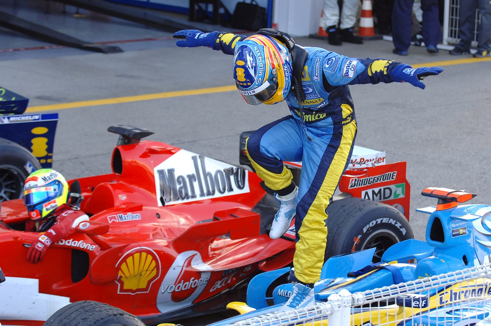
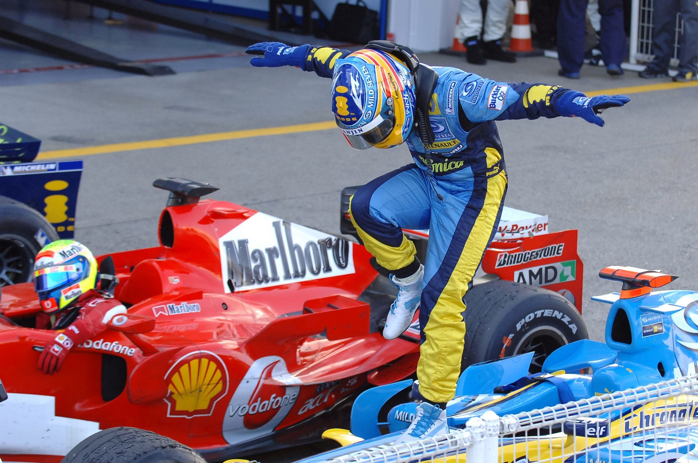

Tras muchos años de esfuerzo y dedicación plena al automovilismo, Fernando Alonso debuta en la Formula 1, la categoría reina del automovilismo, en 2001, con tan solo 20 años, una edad muy temprana para la Formula 1 de esa época.
La magia de Fernando Alonso llena de nuevo los circuitos de Formula 1
 

Este sitio web es un resumen/homenaje sobre la vida, hitos y curiosidades sobre el piloto asturiano y estrella del automovilismo: Fernando Alonso
Fernando Alonso Díaz nació en Oviedo, la capital del Principado de Asturias, en 1981. Con tan solo 3 años, comenzó a conducir en karting con un coche costruido por su propio padre. Un año después, solo con 4 años, consiguió su primera licencia de la Real Federación Española de Automovilismo para poder competir. A partir de aquí, la HISTORIA se cuenta sola.